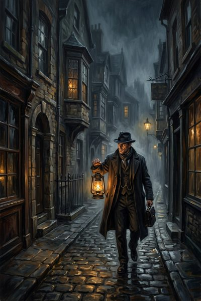
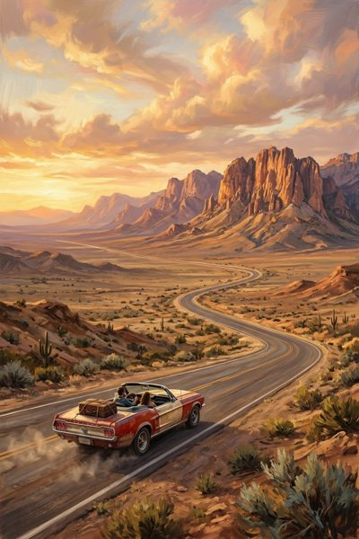
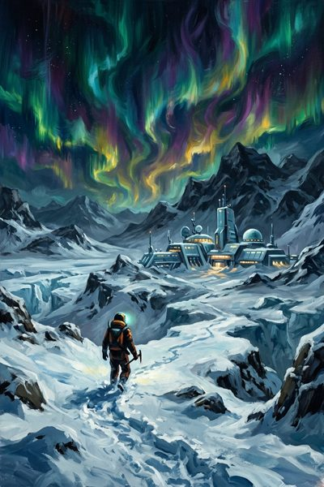
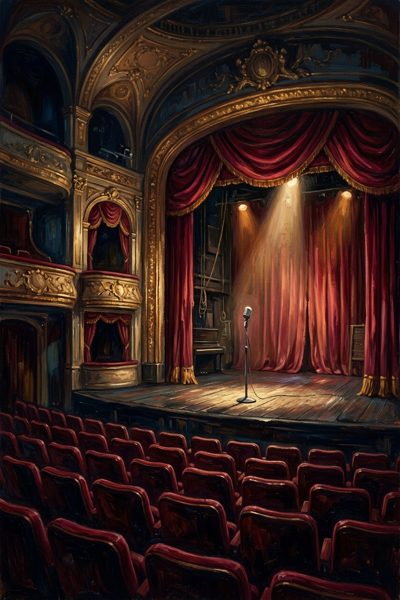
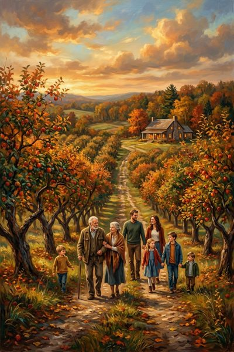
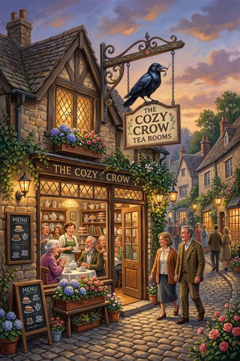
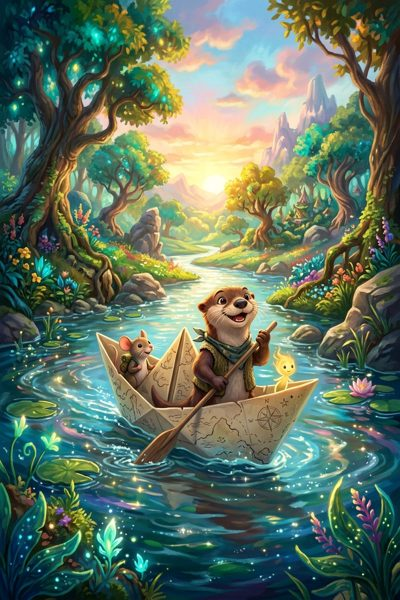
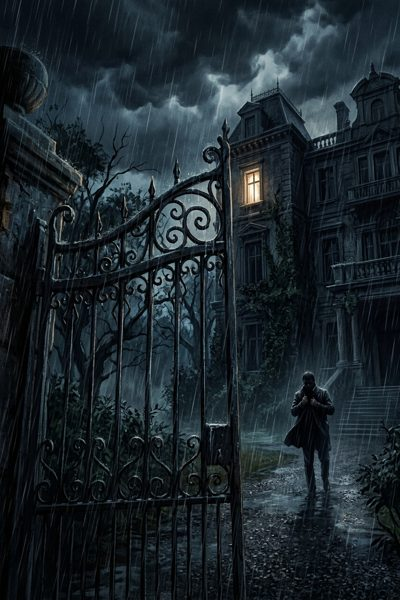
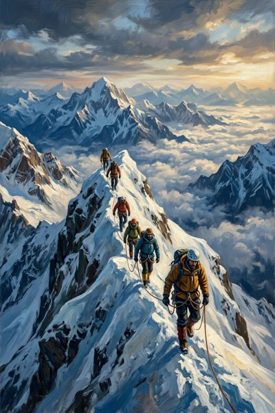
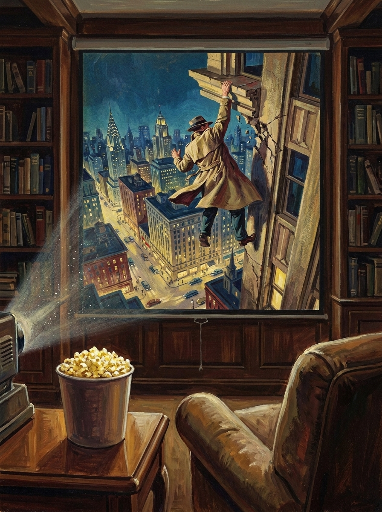

Pulp Design Book
The cover comes first and the identity hue is sampled from whichever painting you choose (D114, D115). This round varies the idea, not the style. Every study is painted in one mid-century cover-painting manner, and no colour is named in any prompt.
Screens · round 1
Four phone screens (D196): Continue Watching, a title page, Discover and a playlist. They're drawn at 393 × 873, the frame Index's book used, in Paper & Ink with the marigold identity. Sports, Calendar, Settings, the child's view and the action cards come in round 2.
Every title, service, price and line here is invented. The services are "Streamly", "Northstar+", "Lanternbox" (with ads) and "Kestrel TV" (free); the rental store is "Reelhouse". The posters are paintings made for this book.
The binder: six tabs, proposed colours
Per DESIGN.md §9, the home area takes the identity and Settings takes the grey. The middle four are drawn from the role fills, the way Score and Post did it. Caution's ochre is left out because its fill sits too close to the marigold cloth to tell apart on the strip. Proposed: Playlists = reference slate, Discover = positive leaf (Score's Discover), Sports = action pine, Calendar = in-progress teal. A tab colour is never a state, and nothing on a page inherits it.
watching




1 · Continue watching (home)
- Most recently watched first (D96). A new episode jumps a show to the top with a chip (D21). A caught-up show isn't here at all (D152).
- Each row: poster in an artwork slot (D119), title, what's next, where it plays and how (D121, D29), and a thin pencil progress mark with a count (D150). Tapping opens the title page (D151).
- Where: the best-quality home for the title (D28). Saltmarsh is also on Lanternbox with ads, so it says Northstar+.
- The voiced greeting sits under the header in ink-blue Pinyon, hidden until it's composed, as on Score (D118). The header wraps to two lines at Display size. "Continue watching" is long, so the tab says Watching.
- Bottom bar (D213): secondary Watch as a child, which reads Back to me in a child's view; primary Recently watched for an adult, which becomes Favorites in a child's view. Both pages are queued for their own rounds.
- Approved (D212), with the tab colours and the row as drawn.
A lighthouse keeper's daughter comes home to the marshes after twenty years and finds the tide charts have been changed by someone who knew exactly where the bodies would wash in.
2 · A title page
- Poster, synopsis, why-this, rating with its reasons, runtime or episode count (D36). No cast, no scores.
- The rating chip is coloured by severity (D120). Four steps (D215): kids in positive leaf, family in grey, teen in caution, mature in problem rose. Here TV-14 is teen. No reasons line: no free source carries the advisory text, so it was dropped at gate 2 (D207).
- Why-this is a voiced line and may name a past title (D41). It's hidden when there's no profile or key.
- Where is the best-quality home (D28, D29). The other home sits beneath it, and tapping open there instead makes it this title's home from then on (D216).
- Trailer is a quiet button by the poster. It plays here and never autoplays (D34, D77).
- Season accordion, current season open (D159). Episodes show number and title only, the next one included; a tap expands the official synopsis in place (D217). No stills anywhere (D37). Watched episodes take a pine tick.
- Bar: Play (primary) + Add to… (secondary) (D158). Play names what it will play. Long-press an episode to mark it (D160).
- Approved (D218).

On Streamly · 4K

On Lanternbox · with ads
3 · Discover · revision 2
- Each pile is a literal stack (D219): one poster at the front with the rest fanned behind. Swipe to the next; "1 of 3" says where you are. Films above, shows below (D108).
- Small buttons beside the front poster (D221): + Add to… (the inline playlist picker, D109), × Not for me, and ▷ Trailer. Tapping the poster opens the title page.
- A veto strikes the front card in ink-blue and dims it. It stays struck until Friday, with Bring it back where the buttons were (D220, D22). Here the shows pile opens on one.
- The search field is pinned under the header, with the Title / Mood chip (D170, D171). Search is titles and teams only (D209). Empty shows the stack; typing replaces it in place.
- Approved (D222).
- The stack turns over Friday at 6 am (D110). Anything can be in it (D107); a title off your services says where and offers the one rent line on its title page (D53).




4 · A playlist
- Named, shared or personal (D18). This one is shared and either adult edits it (D33). It is hand-ordered by dragging the grip (D103).
- A voiced line per playlist (D38).
- It holds films, shows, games and franchises (D100). Watched entries are struck through in ink and kept. Hide watched filters them out (D101).
- Not on your services: where it is, plus the one rent/buy line (D20, D53). Not out yet: dimmed to about 45% with its date (D32). Leaving soon: the date sits on the row only (D124, D146).
- No bottom bar. Adding comes from Discover and title pages, so this page has no primary action. Raised: should a list offer "Play next" (the first unwatched entry) as its primary?
- Raised: D100 says playlists hold whole shows, not seasons. The Orchard Line is drawn here as a season to ask whether an upcoming season should appear as its show instead, with "Season 2 out Mar 14".
Colour · round 2 · yellow-orange
The wheel is tight here. Yellow-orange sits between Flyleaf's amber (41°) and the caution ochre (85°). Only 61–65° clears both by 20°, and only 63° keeps every tier clear after rounding to hex. So C is the one yellow-orange that passes the floor. D is the yellower 70° you may have pictured, shown so you can compare. It sits 15° from caution, under the floor, and would need a recorded departure like Index's.
Where the colour lives. At the suite's shared lightness ladder, the text and deep tiers of any yellow-orange turn brown. That's the only way they can carry text on paper. The bright marigold therefore goes on the cloth, with the rule, flourishes and title in ink: Score's and Plate's light-binding construction. The painting's cool screen now sits in a warm binding, the reverse of round 1.
C · Marigold, 63° (passes)

#CEB7A3ground
#BF9E82mark
#86541F
5.99:1text
#6B4219
8.18:1deep
#4B3015
11.41:1
OKLCH 63°, mark chroma 0.095. 22° from Flyleaf, 22° from caution. Cloth #F6A24E with ink at 6.25:1. The page tiers sit 20° from Flyleaf's tab amber, so on the bookcase Pulp's marigold cloth and Flyleaf's warm ground would read as neighbours.
D · Amber, 70° (under the floor)
#CCB8A2ground
#BCA080mark
#835618
5.98:1text
#684414
8.15:1deep
#493113
11.42:1
OKLCH 70°, mark chroma 0.095. 14.5° from the caution ochre, under the 20° floor. A Pulp tab or accent could be read as "consider this", which is the exact confusion §3 exists to stop. Taking it would mean a named departure in DESIGN.md, as Index has, and a rule that Pulp draws no Caution on its own pages. Cloth #F7AC4D, ink 6.72:1.
The trade against round 1: the blue was a contrast to the painting, cool against warm, and the art's own sky. Yellow-orange matches the painting's warmth instead: the lamp, the popcorn, the coat. It's warmer and friendlier on the shelf, but the cover stops standing apart from its binding, and it puts Pulp beside Flyleaf in the warm corner of the wheel.
Colour · round 1 · the contrast hue
You chose the den (3·4) and asked for a contrast colour. The painting is warm, about 75°, so its contrast is cool, and the painting already holds one: the projected night sky. Its cool pixels average 232°, sampled from the art and not picked off the wheel. That's 157° from the warm body of the painting, close to a true complement.
One small rotation. 232° is the free window between the in-progress teal (207°) and the reference slate (253°). The ladder is set at the window's centre, 230°, so that every tier still clears both roles by 20° after rounding to hex. At 232° the darkest tiers rounded to 19.9°. Score's hue was rotated the same way. The nearest sibling apps are Score (178°) and Post (285°), each more than 50° away.
A · Measured
#A9C0CCground
#8AABBCmark
#2C6983
5.72:1text
#245369
7.86:1deep
#1C3B49
11.16:1
OKLCH 230°, mark chroma 0.075, on the suite's shared lightness ladder (the one Score, Post and Plate use). Cloth #03435B. Paper on cloth: 10.1:1.
B · Vivid
#A4C1D0ground
#82ACC1mark
#0B6A8C
5.72:1text
#0C5470
7.85:1deep
#103B4E
11.25:1
OKLCH 230°, mark chroma 0.095 (Post's vividness). Same cloth. Livelier on the binder tabs; at this chroma the mark tier reads cerulean rather than slate, which keeps it visibly apart from the reference role.
Not offered: a muted ladder at Score's chroma (0.05). At that chroma the pale tiers drift in rounding to 18.8° from the reference slate, under the floor. The cloth is a deep night blue, the same hue deepened (Index's construction), with the rule, flourishes and title inverted to cream (Post's). The warm painting set in a cool binding is where the contrast actually shows on the shelf.
Mockup caveats: the corner flourishes, rule and title band are drawn in CSS here as a stand-in. IconStudio draws the real plate. Contrast figures are each tier's text against the paper, floors 3 / 4.5 / 7.
Round 3 · the original, on a screen
You kept the round 1 painting (06) and asked to see it projected, with a bucket of popcorn on a table in front. Each study below was painted with 06 as the reference, so the projected picture is the same composition. Only the room changes.


At launcher size

Colour: all four sit at 75–85°, the warm band shared with the caution ochre. The painting's night sky is cool, but the lamplight, coat and popcorn outweigh it. If one of these is the cover, the identity likely comes from the binding cloth, as Post's does, or from the projected night sky sampled on its own. That's the colour step.
Round 2 · To be continued, eight ways
You chose 06. Studies 1–4 keep round 1's painting manner and change the crop. Studies 5–8 keep round 1's crop and change the medium. As before, no colour is named in any prompt.
What to judge: which one still reads as one figure on one ledge at launcher size (the strip below), and which medium sits best beside the other books on the shelf. Foreword is an engraving and Folio a linocut, so neither medium is used here.


At launcher size
The centre square of each study at 48 px, in the same order as above. An icon has to work here first.

Colour, measured, not chosen: 2·4 and 2·6 landed at about 235°. That's free wheel space, 28° from the in-progress teal and 18° from the reference slate. It's just inside the 20° floor, so it would want a nudge of two or three degrees, made by rotating the painting rather than repainting it, which is how Score's was done. 2·8 sits at about 305°, 20° from Post. The warm studies keep the round 1 problem.
Round 1 · eight ideas
What to judge: which idea says Pulp at 48dp on a launcher and cover-out on the Flyleaf shelf. Style, crop and colour are round 2's job once an idea is chosen.
Every study is invented imagery. No real film, show, service or person is depicted.


What the paintings measured
As with Plate, mid-century paintings land in the warm band. Seven of eight sit between 65° and 85°, where the caution ochre (85°) and Flyleaf's amber (41°) already are. These numbers don't decide anything yet. They show which ideas would need a cloth or a resample to clear DESIGN.md §3's 20° floor once you've chosen.
| Study | Dominant hue | Nearest role | Nearest app |
|---|---|---|---|
| 01, 08 | ≈ 65° | caution, 20° | Flyleaf, 24° |
| 04, 05, 07 | ≈ 75° | caution, 10° | Folio, 32° |
| 02, 06 | ≈ 85° | caution, 0° | Folio, 22° |
| 03 | ≈ 255° | reference, 2° | Post, 30° |
§12 allows the binding cloth to contrast the art and to carry the identity (Post's precedent), so a warm painting can still sit on a clear cloth. That's the colour step, after the art.